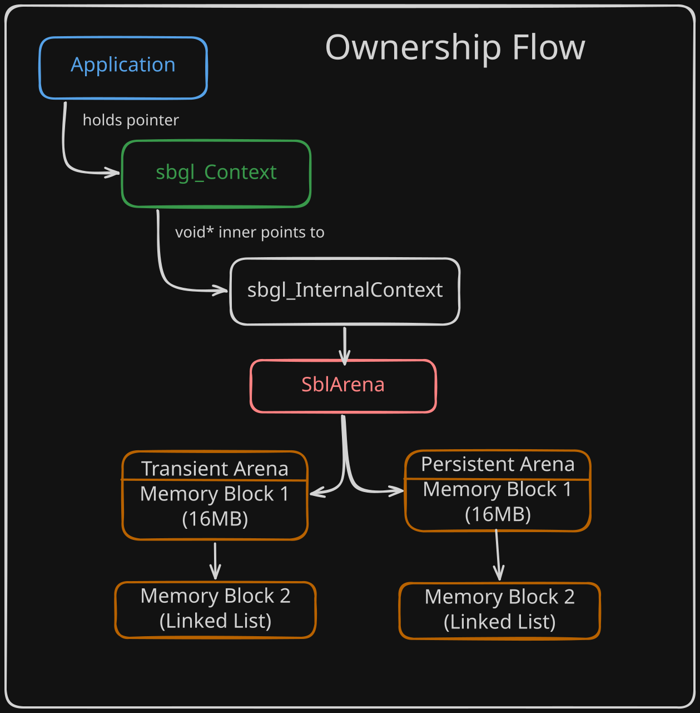
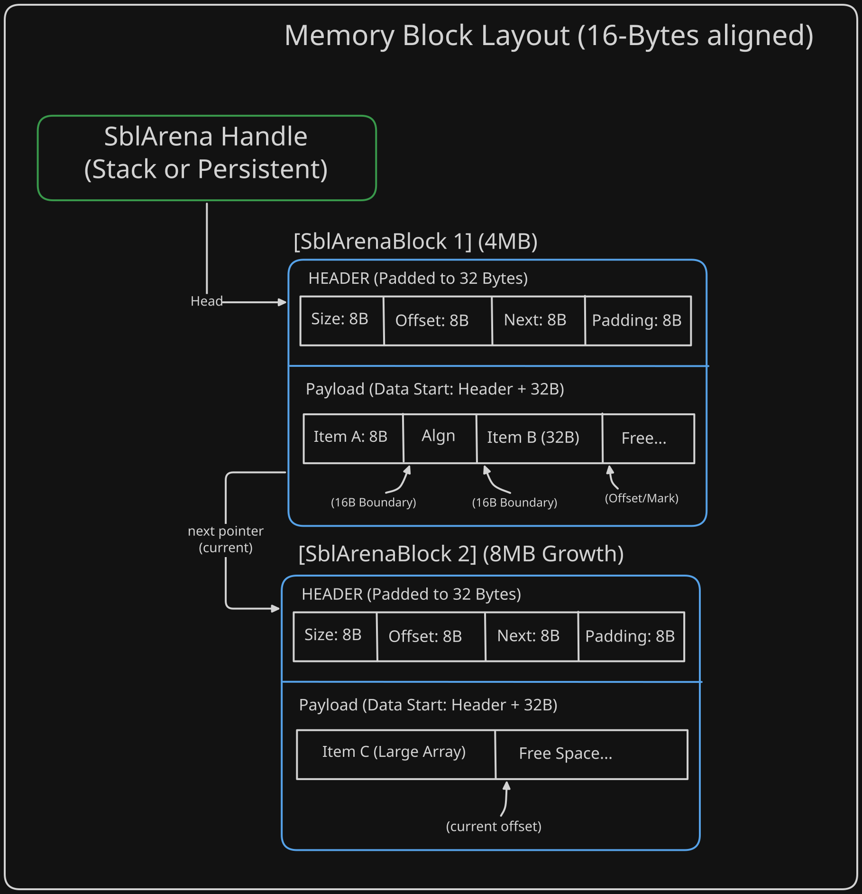

SBgl utilizes a deterministic, arena-based memory architecture designed to eliminate runtime fragmentation and provide allocation with unified lifecycles.
Memory Visualization
The following diagrams illustrate the core hierarchy and ownership.
Core Hierarchy and Ownership
The public context shell encapsulates the internal state and the physical memory controller.

- Persistent Arena (4MB): Where the Window and Gfx state live.
- Transient Arena (16MB): Where high-frequency, frame-local data lives (e.g., sort keys, merged packets).
Memory Block Layout
The linear allocation pattern and the mark/rewind recycling mechanic are used during runtime events like window resizing.

TECHNICAL SPECIFICATIONS
- MINIMUM ALIGNMENT: 16 Bytes Satisfies requirements for SIMD types (sbgl_Mat4, sbgl_Vec4) and Vulkan Buffer Device Address (BDA) storage alignment.
- HEADER SIZE: 32 Bytes The SblArenaBlock header is explicitly padded. Since 32 is a multiple of 16, the data payload in every block starts perfectly aligned, preventing "misalignment drift" in multi-block arenas.
- ALLOCATION LOGIC (O(1)): ptr = (aligned_offset + size) The "Increment Only" pattern ensures zero heap contention and zero fragmentation during the frame-processing hot path.
The Arena Allocator (SblArena)
The core of the memory system is the linear arena allocator defined in sbl_arena.h. This allocator manages contiguous blocks of memory and satisfies allocation requests by simply incrementing an offset pointer.
- Complexity: O(1) for both allocation and deallocation. The allocator satisfies requests by simply incrementing an internal offset pointer. This design eliminates the need to traverse free-lists or communicate with the OS kernel during the performance-critical render loop, ensuring zero-latency memory access.
- Alignment: The allocator enforces a default 16-byte alignment for all allocations. This is a critical requirement for SIMD-optimized data types (like
sbgl_Mat4 and sbgl_InstanceData) which trigger hardware exceptions if accessed on unaligned boundaries.
- Safety: Individual elements are never freed; instead, the entire arena is released at once, preventing dangling pointers and leaks.
- Block Reuse: The
sbl_arena_reset function allows for zero-allocation recycling of existing memory blocks. If the arena grew to multiple blocks during a heavy workload, subsequent frames will reuse the existing chain rather than allocating new heap memory, maintaining a stable memory watermark.
- Leak Prevention: The allocator strictly manages the block chain. If a request exceeds the capacity of an existing block in the chain, the system automatically releases the outdated segments of the chain before allocating a larger replacement, ensuring zero memory leakage during growth-reset cycles.
Block Header Architecture
To maintain strict alignment across multiple memory blocks, the SblArenaBlock header is explicitly padded to 32 bytes. This ensures that the start of the data payload in every new block is already aligned to a 16-byte boundary, preventing "drift" when the arena grows.
Context-Encapsulated Lifecycles
The sbgl_Context holds the primary SblArena for the entire engine instance. When sbgl_Init is called, the arena is initialized first, and then the context shell and all internal platform structures (like the window state) are allocated directly from it.
The Transient Arena
While the primary arena manages the context lifecycle, SBgl utilizes a Transient Arena for data that only needs to exist for the duration of a single frame (e.g., sort keys, merged draw packets, temporary math buffers).
- Default Size: Initialized to 16MB to support high-frequency batching of up to 100,000 instances without triggering runtime reallocations.
- Lifecycle: This arena is reset at the beginning of every frame processing cycle, providing zero-latency "scratch" memory without the overhead of heap fragmentation.
Arena Hierarchy (ASCII)
[ Context Memory Block ]
|
|-- [ Persistent Pool ] (Allocated once at Init)
| |-- Window State
| |-- Graphics Backend State
| |-- Render Queues (Fixed Capacity)
|
|-- [ Transient Pool ] (Reset every frame)
| |-- Merged Draw Packets
| |-- Radix Sort Key/Index Buffers
| |-- Temporary Transformation Workspace
Hybrid GPU Memory Management
To eliminate the overhead of individual vkCreateBuffer calls and minimize GPU memory fragmentation, SBgl utilizes a Hybrid GPU Memory Manager. This system pre-allocates large physical device memory blocks and sub-allocates them into logical segments using specialized strategies.
The Three GPU Heaps
The manager partitions memory into three distinct heaps, each tailored to specific data lifecycles and access patterns:
- Static Heap (Linear): Reserved for resources that live for the duration of the context (e.g., textures, permanent vertex buffers). It utilizes a linear allocation strategy with zero overhead.
- Dynamic Heap (Ring-Buffer): Designed for high-frequency, frame-local data such as instance transforms and camera matrices. It operates as a ring buffer, resetting offsets at the start of each frame to ensure zero-latency scratch memory.
- Managed Heap (Block-Based): Handles resources with intermediate lifecycles that may be created or destroyed during execution (e.g., chunked voxel data). It employs a block-based sub-allocation strategy with range tracking.
Data-Oriented Design (DOD) Benefits
The hybrid approach aligns strictly with DOD principles:
- Sub-allocation Efficiency: By sub-allocating from a single large buffer, multiple logical resources share the same physical memory, improving cache locality during GPU command execution.
- Cache-Efficient SoA Metadata: Allocation metadata is stored in a Struct of Arrays (SoA) format within the memory manager, allowing for rapid batch lookups and updates without cache misses.
- Reduced API Overhead: Pre-allocating memory blocks eliminates the need for expensive Vulkan driver calls during the rendering hot path, moving the complexity to a deterministic CPU-side tracker.
Allocation Strategies
Each heap employs a strategy optimized for its specific workload:
- Linear Strategy: A simple increment-only pointer for the Static Heap.
- Ring Strategy: Sequential allocation with wrap-around logic for the Dynamic Heap, ensuring data is valid for all frames in flight.
- Block Strategy: Divides the Managed Heap into uniform blocks, using an internal array-based tracker to manage availability and fragmentation.
Ownership Transfer
The sbgl_InternalContext assumes ownership of the arena. This creates a single point of failure and success: calling sbl_arena_free() during shutdown automatically releases every byte of memory used by the core, platform, and graphics layers.
Dynamic Resource Management (Mark/Rewind)
While arenas are typically linear, SBgl implements a Mark and Rewind pattern to handle dynamic resources that must be recreated, such as the Vulkan Swapchain.
- The Mark: A bookmark (
SblArenaMark) is taken before a set of dynamic allocations.
- The Rewind: When the resources need to be updated (e.g., window resize), the arena is rewound to the bookmark.
- The Recycle: New resources are pushed onto the exact same memory location, keeping the memory footprint constant regardless of how many times the window is resized.
Technical Summary
| Feature | Implementation | Benefit |
| Primary Allocator | Linear Arena (SblArena) | Zero fragmentation, O(1) allocation. |
| GPU Memory | Hybrid Manager | Sub-allocation from pre-allocated heaps (Static/Dynamic/Managed). |
| Safety Pattern | Mark/Rewind | Constant memory footprint for dynamic arrays. |
| Initialization | Push-Struct-Zero | Deterministic starting state without memset. |
| Cleanup | Unified Arena Free | Single-call total resource reclamation. |
 1.12.0
1.12.0